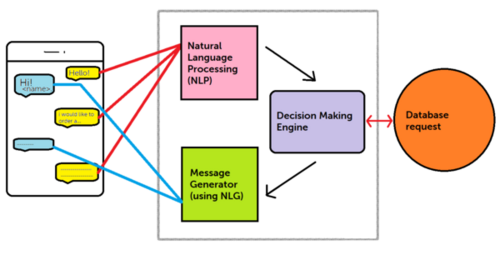
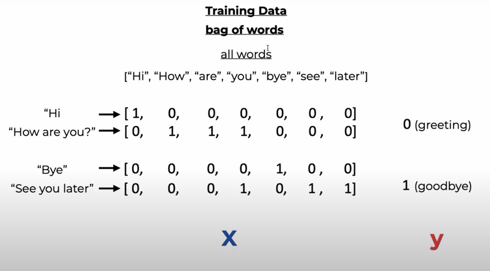
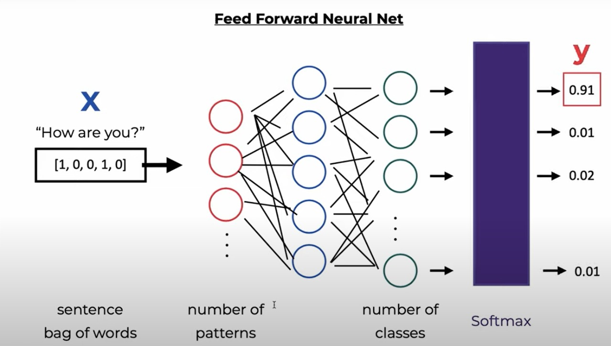

HealthCare Assistant
Submission for IEI Hackathon v1.0 by Team Maria
About
HealthCare Assistant is an ML-driven chatbot that will assist you in analyzing your symptoms and predicting the disease. The chatbot can respond to your queries only to the of the knowledge base, so it is adviced to crosscheck the responses with a medical professional.
Problem Statement
For ages, having a good healthcare is a luxury for many people. It is not safe if people start making assumptions about their symptoms and take medications on their own.
Solution We Provide
A conversational bot that can predict the user's disease upto some extent and can advice them to visit the respective doctors.
Note: This Bot can attempt to answer your queries about a limited set of diseases as of now. It can tell you about its description and some treatment. We can make this bot more effective by expanding the knowlege base and making it ask for further questions (age, further symptoms, etc...) to increase the accuracy of it's prediction.
How Does It Work?
- We have built a knowledge database for limited diseases, their symptoms and their self-help treatments.
- Then, we transform the intents from the database to a Pytorch model.
- We then Built a chatbot framework to process the responses.
- We can access the bot from the website after integrating the chatbot framework.
Product Flow and Its Underlying Architecture


